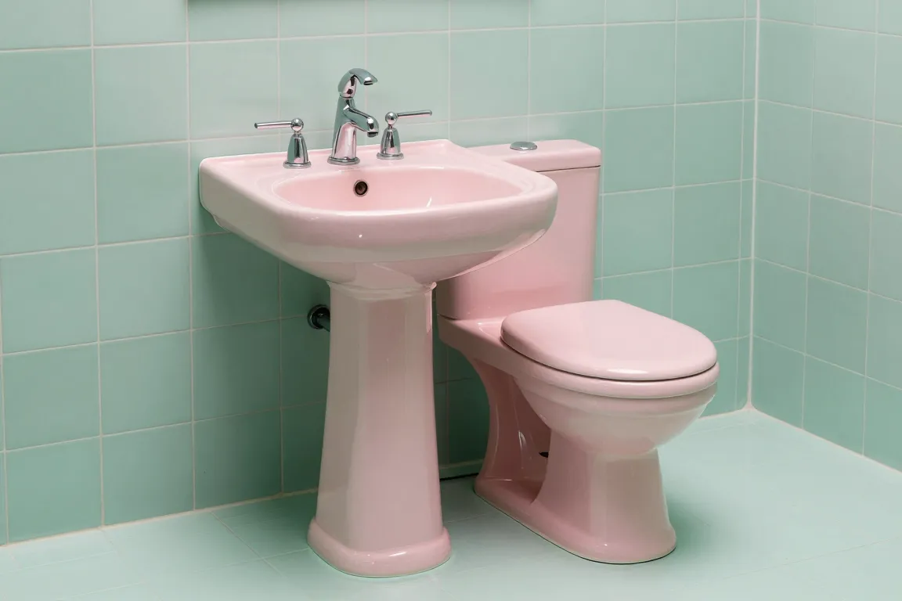

керамика · 1927–1975 · также: Пастельный гарнитур для ванной, Розовая и зелёная сантехника, Цветные приборы одного тона
Ванна, раковина и унитаз, покрытые глазурью одного насыщенного цвета: розового, зелёного, синего, жёлтого или позже авокадо. Ровная глянцевая глазурь и подобранный набор превращают ванную в цветную комнату.

Главная идея
Сантехника может быть цветом комнаты, а одна ровная глазурь на каждой вещи даёт ванную, где всё подобрано.
Принципы дизайна
Глазуруйте раковину, чашу, бачок и ванну одним цветом из одной партии.
Выбирайте один пастельный или землистый цвет: розовый, небесно-голубой, мятный, лютиково-жёлтый или зелёный авокадо.
Придавайте каждой вещи мягкие кривые и радиус 30–60 мм на каждом краю.
Держите глазурь ровной, с блеском 85–95 GU и без узора.
Подбирайте цвет плитки, полотенец и стен под гарнитур.
Добавляйте хромированные краны с небольшой белой или прозрачной крестовой рукояткой.
Формуйте раковину, ребро или обтекаемый пояс как единственный рельеф.